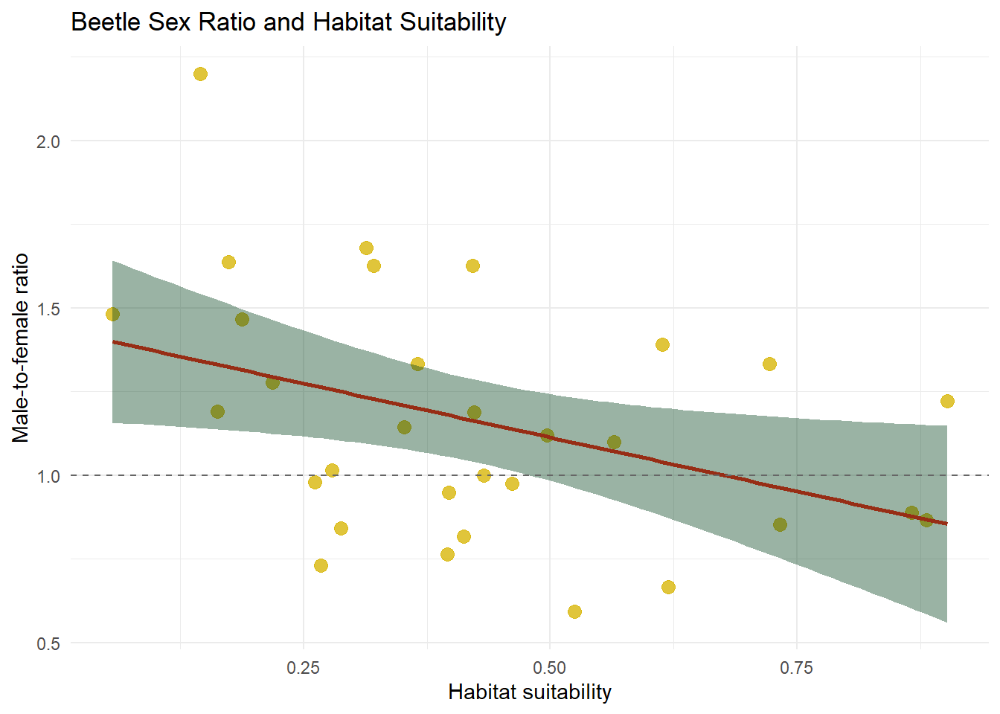
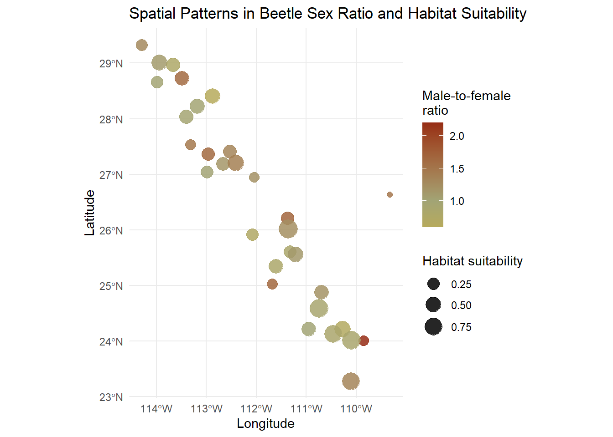

Habitat Suitability and Sex Ratios in the Sonoran Desert Bark Beetle - Point Data Homework
Author
Dez Waag
Published
October 21, 2026
Abstract
This analysis examined the relationship between habitat suitability and sampled sex ratios of the Sonoran Desert bark beetle Araptus attenuatus across 31 sites. Higher habitat suitability was associated with lower male-to-female ratios (Pearson’s r = −0.400, p = 0.026), while spatial mapping provided geographic context without formally testing spatial clustering.
Introduction
The Sonoran Desert bark beetle (Araptus attenuatus) is a plant-feeding beetle associated with the desert shrub Euphorbia lomelii in northwestern Mexico. Examining sex ratios across habitats can help identify whether environmental suitability is associated with differences in the relative numbers of sampled males and females. This analysis investigated that relationship and used spatial maps to explore its geographic context.
Araptus attenuatus (female). (by TH Atkinson, Florida State Collection of Arthropods, Gainesville, Florida).
library(tidyverse)
── Attaching core tidyverse packages ──────────────────────── tidyverse 2.0.0 ──
✔ dplyr 1.2.1 ✔ readr 2.2.0
✔ forcats 1.0.1 ✔ stringr 1.6.0
✔ ggplot2 4.0.3 ✔ tibble 3.3.1
✔ lubridate 1.9.5 ✔ tidyr 1.3.2
✔ purrr 1.2.2
── Conflicts ────────────────────────────────────────── tidyverse_conflicts() ──
✖ dplyr::filter() masks stats::filter()
✖ dplyr::lag() masks stats::lag()
ℹ Use the conflicted package (<http://conflicted.r-lib.org/>) to force all conflicts to become errors
library(sf)
Linking to GEOS 3.14.1, GDAL 3.12.1, PROJ 9.7.1; sf_use_s2() is TRUE
library(units)
udunits database from C:/Users/dwaag/AppData/Local/R/win-library/4.6/units/share/udunits/udunits2.xml
For this analysis, site-level data for the Sonoran Desert bark beetle (Araptus attenuatus) were obtained from the class CourseData repository. The CSV file was imported into R using read_csv() and stored in the beetles data table.
Rows: 31 Columns: 9
── Column specification ────────────────────────────────────────────────────────
Delimiter: ","
chr (1): Site
dbl (8): Males, Females, Suitability, MFRatio, GenVarArapat, GenVarEuphli, L...
ℹ Use `spec()` to retrieve the full column specification for this data.
ℹ Specify the column types or set `show_col_types = FALSE` to quiet this message.
The dataset contains 31 sampling sites and nine variables, with each row representing one site. Variables used in this analysis included male and female counts, habitat suitability, male-to-female ratio, and geographic coordinates. Each site was treated as one observation.
The supplied MFRatio variable represents the number of sampled males divided by the number of sampled females. Values above 1 indicate male-biased samples, values below 1 indicate female-biased samples, and a value of 1 indicates equal numbers. Its distribution was inspected using summary().
summary( beetles$MFRatio)
Min. 1st Qu. Median Mean 3rd Qu. Max.
0.5938 0.8778 1.1200 1.1598 1.3618 2.2000
The summary shows that sampled sex ratios fall both below and above 1, indicating that the dataset includes both female-biased and male-biased samples. Each site was treated as one observation in the subsequent analysis.
Statistical Analysis
A two-sided Pearson correlation test was used to evaluate the linear association between habitat suitability and male-to-female ratio across sampling sites. Statistical significance was evaluated at \(\alpha = 0.05\).
The hypotheses were:
Null hypothesis: Habitat suitability and male-to-female ratio have no linear correlation in the population of sites.
Alternative hypothesis: Habitat suitability and male-to-female ratio have a linear correlation, either positive or negative.
The test was performed using cor.test(), and the results were stored in sex_habitat_cor.
Pearson's product-moment correlation
data: beetles$Suitability and beetles$MFRatio
t = -2.3484, df = 29, p-value = 0.02589
alternative hypothesis: true correlation is not equal to 0
95 percent confidence interval:
-0.66051230 -0.05287575
sample estimates:
cor
-0.3997266
The output indicated a moderate negative correlation (\(r = -0.400\), \(p = 0.026\)). At a significance threshold of 0.05, this supported rejecting the null hypothesis. The 95% confidence interval for the correlation (−0.661 to −0.053) also excluded zero.
Across the 31 sampling sites, higher habitat suitability was associated with lower male-to-female ratios. However, a lower ratio does not necessarily indicate a female-biased sample; the ratio must fall below 1 for females to outnumber males. This association does not establish that habitat suitability caused the differences in sampled sex ratios.
The correlation test treated sites as independent observations and did not account for potential spatial dependence, meaning that nearby sites could share characteristics that influence the analysis.
Spatial Analysis
Spatial analysis was used to examine sampling locations, calculate the distance between two selected sites, and prepare the data for geographic visualization. Spatial patterns were examined descriptively; no formal test of spatial clustering was performed.
Converting to Spatial Features
Sampling-site coordinates were converted into spatial point features using the sf package. Longitude and latitude were identified as the coordinate columns, and the WGS 84 geographic coordinate reference system (EPSG:4326) was assigned to describe their existing values in degrees.
The output displays the first six sampling sites as point features. Their coordinates are stored in a geometry column, while attributes such as habitat suitability and male-to-female ratio remain associated with each site.
Distance Between Selected Sites
Constitución (const) and San Francisquito (sfran) were selected to calculate their geographic separation. The st_distance() function calculated the distance between the spatial points, and set_units() converted the result to kilometers.
The distance matrix contains zeros along the diagonal because each site is compared with itself. The off-diagonal entries show the distance between the two sites. Constitución and San Francisquito are approximately 290.1 km apart. This represents geographic separation rather than travel distance along roads.
Interactive Map of Sampling Locations
An interactive map was created using leaflet with an Esri satellite imagery basemap. Markers were positioned using each site’s longitude and latitude, and labels identified the sites when hovering over the markers.
The map provides geographic context for the sampling sites across the Baja California peninsula and nearby mainland Mexico. It shows sampling locations; habitat suitability and sex ratio are represented in the subsequent thematic maps.
Reprojection to UTM Zone 12N
The spatial points were transformed from WGS 84 geographic coordinates to WGS 84 / UTM zone 12N (EPSG:32612) using st_transform(). This expresses the locations as easting and northing coordinates in meters.
X Y
[1,] 666529.7 2947413
[2,] 616893.7 2655577
[3,] 396155.0 2980872
[4,] 431898.6 2767852
[5,] 271258.7 3047215
[6,] 180128.0 3248545
The output shows the first six sites’ projected coordinates, with X representing easting and Y representing northing. Reprojection changes the coordinate representation while preserving the real-world locations and their associated beetle data. The projected dataset was used to produce the UTM map presented in the Results section.
Results
Habitat Suitability and Sex Ratio
Across the 31 sampling sites, habitat suitability ranged from 0.0563 to 0.9019, and male-to-female ratios ranged from 0.5938 to 2.2000. Habitat suitability was moderately negatively correlated with male-to-female ratio (\(r = -0.400\), \(p = 0.026\); 95% confidence interval: −0.661 to −0.053). The relationship is illustrated in Figure 1.
ggplot(beetles, aes(x = Suitability, y = MFRatio)) +geom_point(color = pal[1],size =3,alpha =0.8 ) +geom_smooth(method ="lm",formula = y ~ x,color = pal[5],fill = pal[2],se =TRUE ) +geom_hline(yintercept =1,linetype ="dashed",color ="gray40" ) +labs(title ="Beetle Sex Ratio and Habitat Suitability",x ="Habitat suitability",y ="Male-to-female ratio" ) +theme_minimal()

Figure 1: Relationship between habitat suitability and sampled male-to-female ratio across 31 beetle sampling sites. Each point represents one site. The solid line shows a fitted linear regression, and shading represents its 95% confidence interval for the mean response. The dashed horizontal line marks equal numbers of sampled males and females.
The downward slope of the fitted regression line indicates that higher habitat suitability was associated with lower male-to-female ratios. Points occur both above and below the reference line at 1, representing male-biased and female-biased samples, respectively. Variation around the fitted line shows that sites with similar suitability scores could have different sampled sex ratios, and higher suitability did not consistently correspond to female-biased samples.
Together, these results support an association between habitat suitability and sampled sex ratio. However, they do not establish that suitability caused the observed differences or directly demonstrate sex-biased dispersal.
Spatial Distribution
Sampling sites extended from approximately 23.29°N to 29.33°N and from 114.29°W to 109.33°W, spanning the Baja California peninsula and nearby mainland Mexico. Constitución and San Francisquito were approximately 290.1 km apart. Differences in habitat suitability and sampled sex ratio were displayed at each sampling location in Figure 2.
ggplot(beetles_sf) +geom_sf(aes(color = MFRatio, size = Suitability),alpha =0.85 ) +scale_color_gradient2(low = pal[1],mid = pal[3],high = pal[5],midpoint =1,name ="Male-to-female\nratio" ) +scale_size_continuous(range =c(2, 7),name ="Habitat suitability" ) +labs(title ="Spatial Patterns in Beetle Sex Ratio and Habitat Suitability",x ="Longitude",y ="Latitude" ) +theme_minimal()

Figure 2: Spatial distribution of sampled beetle sex ratios and habitat suitability. Point color indicates the male-to-female ratio, with the color scale centered at equal numbers of males and females (1). Larger points indicate higher habitat suitability.
Larger points represent sites with higher habitat suitability. The color scale is centered on a male-to-female ratio of 1, shown in yellow, with lower ratios extending toward blue and higher ratios toward red. These symbols allow habitat suitability and sampled sex ratio to be compared geographically.
The same sampling sites are displayed in WGS 84 / UTM zone 12N in Figure 3, with easting and northing coordinates expressed in meters.
Figure 3: Beetle sampling sites projected to WGS 84 / UTM zone 12N (EPSG:32612). Color represents the sampled male-to-female ratio, and larger points indicate higher habitat suitability. Coordinates are expressed in meters.
Reprojection changed the coordinate representation without changing the sampling locations, habitat suitability scores, or sex ratios. The maps provide geographic context for the association between suitability and sampled sex ratio, but do not establish statistically significant spatial clustering. Because the correlation analysis did not account for spatial dependence, whether the association remains significant after accounting for similarities among nearby sites is unresolved.
Conclusion
Habitat suitability was moderately negatively associated with sampled male-to-female ratios across the 31 sites, with higher suitability generally corresponding to fewer males relative to females. Spatial maps showed where these differences occurred, although spatial clustering was not formally tested. These findings support an association between habitat suitability and sampled sex ratio, but further analysis would be needed to establish its causes or determine whether it reflects sex-biased dispersal.
Appendix: Study Notes
Below are my notes documenting how I worked through and interpreted each step of the analysis. Click a tab to view each page, or click an image to open it on Flickr.